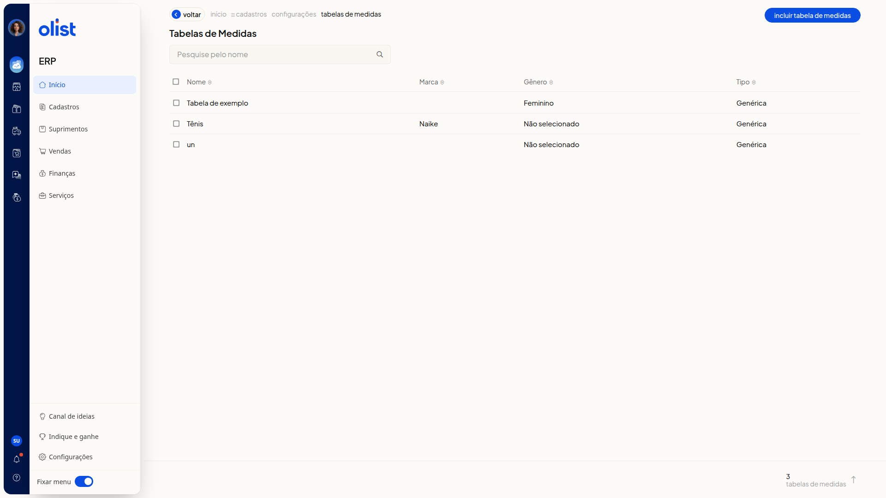
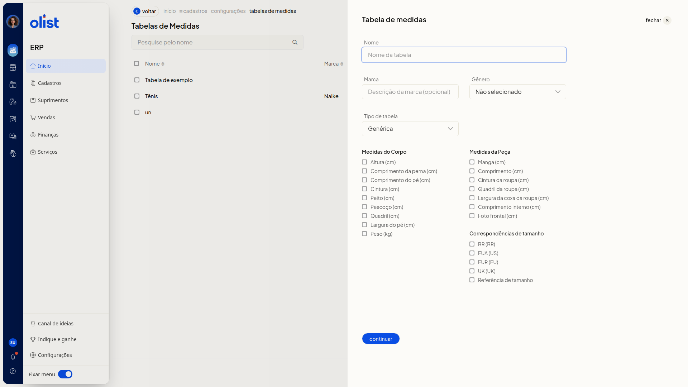
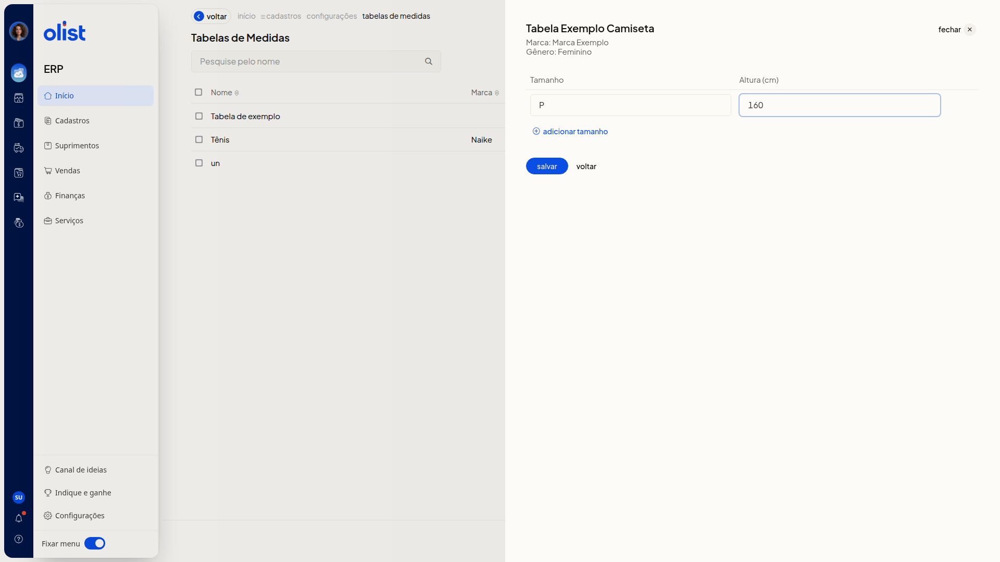

Tabelas de medidas - Vestuário: Roupas e calçados
Descrição
No ERP da Olist, a página Tabelas de Medidas lista tabelas de vestuário e permite incluir uma nova em duas etapas. Você consulta as colunas Nome, Marca, Gênero e Tipo, pesquisa uma tabela no campo Pesquise pelo nome e inclui uma tabela pelo botão Incluir Tabela de Medidas.
O caminho no menu lateral é Configurações > Configurações ERP > Cadastros > Tabelas de medidas. Na inclusão, informe os dados da tabela, marque as medidas e preencha os tamanhos na etapa seguinte.
Pré-requisitos
- Estar no ERP com o menu Configurações disponível.
- Permissão para configurar tabelas de medidas. Só quem tem essa permissão acessa a tela Tabelas de Medidas.
- O item Tabelas de medidas não aparece no submenu Cadastros da barra lateral. O caminho passa por Configurações ERP, aba Cadastros.
Importante
- Nenhum campo do formulário é obrigatório.
- Na primeira etapa, a ação para seguir é Continuar. Salvar só aparece na etapa de tamanhos.
- O Tipo de tabela altera quais grupos de medidas são exibidos.
Instruções
-
Clique em Configurações no menu lateral.
-
Clique em Configurações ERP.
-
Na aba Cadastros, clique em Tabelas de medidas.

-
Na página Tabelas de Medidas, clique em Incluir Tabela de Medidas.

-
Informe Nome e, se quiser, Marca. Selecione Gênero e Tipo de tabela com as opções abaixo.
Dados da tabela
- Nome
- Marca
- Gênero: valor inicial Não selecionado. Opções: Não selecionado, Masculino, Feminino, Meninos e Meninas.
- Tipo de tabela: valor inicial Genérica. Opções: Genérica, Moda - Medidas da peça, Moda - Medidas do corpo e Moda - Medidas combinadas.
- Marque as medidas desejadas em Medidas do Corpo, Medidas da Peça e Correspondências de tamanho, conforme o tipo. A medida marcada vira coluna na etapa de tamanhos.
Medidas do Corpo
Visível em Genérica, Moda - Medidas do corpo e Moda - Medidas combinadas.
- Altura (cm)
- Comprimento da perna (cm)
- Comprimento do pé (cm)
- Cintura (cm)
- Peito (cm)
- Pescoço (cm)
- Quadril (cm)
- Largura do pé (cm)
- Peso (kg)
Medidas da Peça
Visível em Genérica, Moda - Medidas da peça e Moda - Medidas combinadas.
- Manga (cm)
- Comprimento (cm)
- Cintura da roupa (cm)
- Quadril da roupa (cm)
- Largura da coxa da roupa (cm)
- Comprimento interno (cm)
- Foto frontal (cm)
Correspondências de tamanho
Visível em Genérica, Moda - Medidas da peça, Moda - Medidas do corpo e Moda - Medidas combinadas.
- BR (BR)
- EUA (US)
- EUR (EU)
- UK (UK)
- Referência de tamanho
-
Clique em Continuar.
-
Preencha Tamanho e os valores das medidas marcadas. Para incluir outro tamanho, clique em Adicionar tamanho. Clique em Salvar para concluir o cadastro.

Informações adicionais
Voltar na etapa de tamanhos abre um aviso
A opção continuar devolve à configuração com os dados ainda preenchidos.
Links relacionados
Se precisar de ajuda, fale com o suporte.